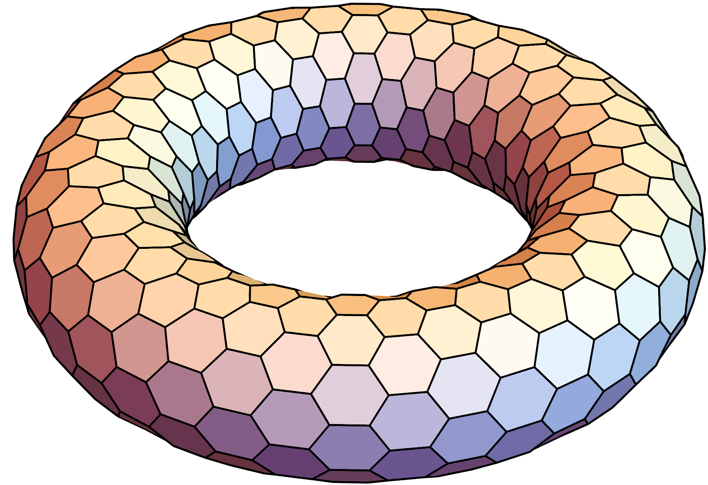
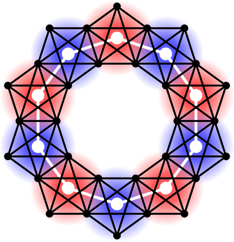

Dr. Jan Kurkofka

News
- Invited mini-symposium at SIAM DM 2026 in June. (Slides)
- Talk at the Leipzig Algebra and Combinatorics Seminar in June.
- Our paper A Tutte-type canonical decomposition of 3- and 4-connected graphs was accepted to SODA 2026.
firstname.lastname the-sign uni-hamburg.de
University of Hamburg (DE)
Bundesstraße 55
Room 229
Selected Publications
- An approximate cactus-decompositions for vertex-connectivity (with Romain Bourneuf, Johannes Carmesin and Tim Planken), to appear.
- Every infinitely edge-connected graph contains the Farey graph or $T_{\aleph_0}\!\ast t$ as a minor, Mathematische Annalen 382 (2022), 1881-1900. ( Journal | arXiv )
- Canonical graph decompositions via coverings (with Reinhard Diestel, Raphael W. Jacobs and Paul Knappe), to appear in Transactions of the American Mathematical Society (2027). (arXiv)
- Canonical graph decompositions via local separations (with Raphael W. Jacobs and Paul Knappe), submitted (2026). (arXiv)
- A Tutte-type canonical decomposition of 3- and 4-connected graphs (with Tim Planken), SODA (2026), 2942-3021 ( Conference Proceedings | arXiv )
- Canonical decompositions of 3-connected graphs (with Johannes Carmesin), FOCS (2023), 1887-1920 (Conference Proceedings); Advances in Combinatorics 2025:7, 73pp ( Journal | arXiv )
Funding
- Funded by the Deutsche Forschungsgemeinschaft (DFG, German Research Foundation) - 566118291
Teaching
- Linear Algebra 1
Teaching in previous semesters
Selected talks
Research interests
My research interests include Graph Minor Theory, Connectivity Theory, Topological Graph Theory, Infinite Graph Theory, and intradisciplinary applications thereof. Here are some ongoing and recent projects:

Explicit structure theorems for low connectivity
Decomposing graphs into highly connected regions is a foundational method in Graph Minor Theory, and Connectivity Theory more broadly. Explicit solutions to the following problem for any k would be tremendously useful for computing excluded minors: Decompose every k-connected graph along k-separators into smaller pieces that are (k + 1)-connected or 'basic'. The first step k = 1 is given by the block-cutvertex decomposition. For k = 2, the solution is a classical theorem of Tutte from 1966, which builds on earlier works of Whitney from the 1930s. It was long believed that Tutte's Theorem cannot be fully extended to higher connectivity. I recently proposed a new perspective on graph connectivity that allowed me to prove a Tutte-Theorem for k = 3 with Carmesin. Can this be extended to larger k ?

Local-global invariants of graphs and groups
The question to what extent graph invariants - the chromatic number, say, or connectivity - are of local or global character, and how their local and global aspects interact, drives much of the research in graph theory both structural and extremal. This project offers such studies a possible formal basis. In our main paper we combine coverings, as known from Topology, with tangle-tree decompositions as known from Graph Minor Theory, to canonically decompose finite graphs and groups into their highly connected local parts. The global structure of the graph or group, as determined by the relative position of these parts, is then described by a coarser model. I am currently working on applications of our result and methodoloy in Computer Science and Combinatorial Group Theory.

Farey graph
The Farey graph, shown on the left and surveyed on 300 pages in Hatcher's new book (PDF), plays a role in a number of mathematical fields ranging from group theory and number theory to geometry and dynamics. Curiously, graph theory has not been among these until very recently, when I showed that the Farey graph plays a central role in graph theory too: it is one of two infinitely edge-connected graphs that must occur as a minor in every infinitely edge-connected graph. Previously it was not known that there was any set of graphs determining infinite edge-connectivity by forming a minor-minimal list in this way, let alone a finite set. This resulted marked the starting point of a project in which I addressed exciting follow-up questions.

The whirl graph on the left answers three questions about the Farey graph at once. For instance, the whirl graph is infinitely edge-connected and contains the Farey graph as a minor with branch sets of size two, but it does not contain a subdivision of the Farey graph. In fact, the whirl graph contains no subdivision of any naively constructed infinitely edge-connected graph, because it has the following property: For any two vertices u,v and any positive integer k, the whirl graph contains k edge-disjoint order-compatible u–v paths but not infinitely many.
Publications and preprints
Explicit structure theorems for low connectivity
- An approximate cactus-decompositions for vertex-connectivity (with Romain Bourneuf, Johannes Carmesin and Tim Planken), to appear.
- A Tutte-type canonical decomposition of 3- and 4-connected graphs (with Tim Planken), SODA (2026), 2942-3021 ( Conference Proceedings | arXiv )
- Canonical decompositions of 3-connected graphs (with Johannes Carmesin), FOCS (2023), 1887-1920 (Conference Proceedings); Advances in Combinatorics 2025:7, 73pp ( Journal | arXiv )
- A characterisation of all vertex-transitive finite graphs of connectivity < 5 (with Tim Planken), to be submitted (2026). (arXiv)
- Characterising 4-tangles through a connectivity property (with Johannes Carmesin), Electronic Journal of Combinatorics 32(3) (2025), P3.26. ( Journal | arXiv )
Local-global invariants of graphs and groups
- Canonical graph decompositions via coverings (with Reinhard Diestel, Raphael W. Jacobs and Paul Knappe), to appear in Transactions of the American Mathematical Society (2027). (arXiv)
- Canonical graph decompositions via local separations (with Raphael W. Jacobs and Paul Knappe), submitted (2026). (arXiv)
- Towards a Stallings-type theorem for finite groups (with Johannes Carmesin, George Kontogeorgiou and Will J. Turner), submitted (2024). (arXiv)
- Entanglements (with Johannes Carmesin), Journal of Combinatorial Theory, Series B 164 (2024), 17-28. ( Journal | arXiv )
Combinatorics in 3D
- On the edge-chromatic number of 2-complexes (with Emily Nevinson), Discrete Mathematics 348(2) (2025), 114309. ( Journal | arXiv )
Farey graph
- Every infinitely edge-connected graph contains the Farey graph or $T_{\aleph_0}\!\ast t$ as a minor, Mathematische Annalen 382 (2022), 1881-1900. ( Journal | arXiv )
- The immersion-minimal infinitely edge-connected graph (with Paul Knappe), Journal of Combinatorial Theory, Series B 164 (2024), 492-516. ( Journal | arXiv )
- The Farey graph is uniquely determined by its connectivity, Journal of Combinatorial Theory, Series B 151 (2021), 223-234. ( Journal | arXiv )
- Ubiquity and the Farey graph, European Journal of Combinatorics 95 (2021), 103326. ( Journal | arXiv )
End spaces
- A representation theorem for end spaces of infinite graphs (with Max Pitz), Mathematical Proceedings of the Cambridge Philosophical Society (2026). ( Journal | arXiv )
- Halin's end degree conjecture (with Stefan Geschke, Ruben Melcher and Max Pitz), Israel Journal of Mathematics (2022). ( Journal | arXiv )
- Approximating infinite graphs by normal trees (with Ruben Melcher and Max Pitz), Journal of Combinatorial Theory, Series B 148 (2021), 173-183. ( Journal | arXiv )
- Countably determined ends and graphs (with Ruben Melcher), Journal of Combinatorial Theory, Series B 156 (2022), 31-56. ( Journal | arXiv )
- End-faithful spanning trees in graphs without normal spanning trees (with Carl Bürger), Journal of Graph Theory (2022). ( Journal | arXiv )
- A strengthening of Halin's grid theorem (with Ruben Melcher and Max Pitz), Mathematika 68(4) (2022). ( Journal | arXiv )
- The Lovász-Cherkassky theorem for locally finite graphs with ends (with Raphael W. Jacobs, Attila Joó, Paul Knappe and Ruben Melcher), Discrete Mathematics 346(12) (2025), 113586. ( Journal | arXiv )
Editor's Choice Award 2025
Star-comb series
- Duality theorems for stars and combs I: Arbitrary stars and combs (with Carl Bürger), Journal of Graph Theory 99(4) (2022), 525-554. ( Journal | arXiv )
- Duality theorems for stars and combs II: Dominating stars and dominated combs (with Carl Bürger), Journal of Graph Theory 99(4) (2022), 555-572. ( Journal | arXiv )
- Duality theorems for stars and combs III: Undominated combs (with Carl Bürger), Journal of Graph Theory 100(1) (2022), 127-139. ( Journal | arXiv)
- Duality theorems for stars and combs IV: Undominating stars (with Carl Bürger), Journal of Graph Theory 100(1) (2022), 140-162. ( Journal | arXiv)
Ends and tangles
- Tangles and the Stone-Čech compactification of infinite graphs (with Max Pitz), Journal of Combinatorial Theory, Series B 146 (2021), 34-60. ( Journal | arXiv )
- Ends, tangles and critical vertex sets (with Max Pitz), Mathematische Nachrichten 292(9) (2019), 2072-2091. ( Journal | arXiv )
- A tree-of-tangles theorem for infinite tangles (with Ann-Kathrin Elm), Abhandlungen aus dem Mathematischen Seminar der Universität Hamburg 92 (2022), 139-178. ( Journal | arXiv )